| 日付 | 2011年10月8日（土） - 2011年10月10日（月） | ||||||
|---|---|---|---|---|---|---|---|
| 山域 | 西上州、浅間周辺 | ||||||
| メンバー | 家族（妻、長女・0歳） | ||||||
| 山行形態 | 子連れ2泊3日ホテル泊 | ||||||
| アクセス | 車 | ||||||
| ルート (Map1) |
|
車を購入したら納車日が1週間早まったため、突然3連休で出かけられるようになった。
ここ最近の祝日は全て出勤日だったため、久々の3連休だ。
せっかくなので、3日かけて山に行くことにする。
3日と言っても2泊3日の縦走登山はもう無理なので、日帰り登山を3回繰り返す。
場所はいろいろと迷ったが、どこに行っても混みそうなので人の少なそうな西上州に行くことにする。
1日目
朝は5時半に起床。週末はどの道も混むので、早めに出発する。
10時過ぎに妙義神社近くの駐車場に到着。まずは西側の中之嶽神社方面まで歩いていく。
目の前には妙義山塊の一つ、金鶏山が聳える。
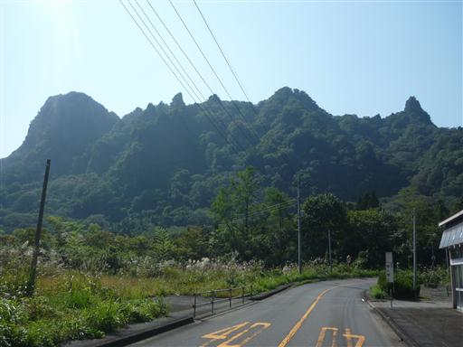
しばらく車道を歩くと登山道入口に到着する。
車道を大きくショートカットする道だが、登りが続く苦しい道だ。

薄暗い沢沿いの道を登っていく。
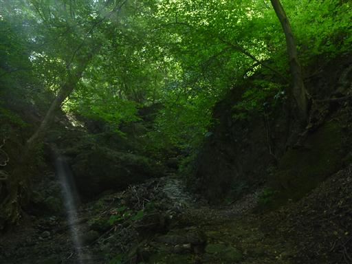
一本杉に到着。この先で再び車道と合流する。
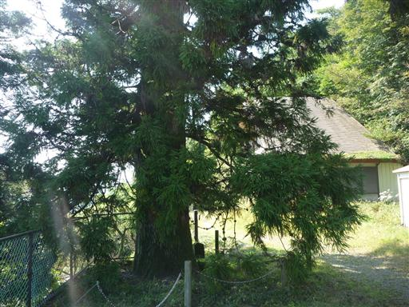
ここからは遠く西上州の山々を見渡せる。
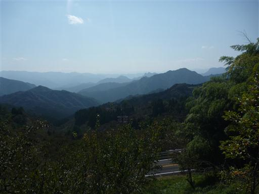
妙義山の石門群を巡る遊歩道の入口に到着する。
入口から天を衝く岩峰がお出迎えだ。
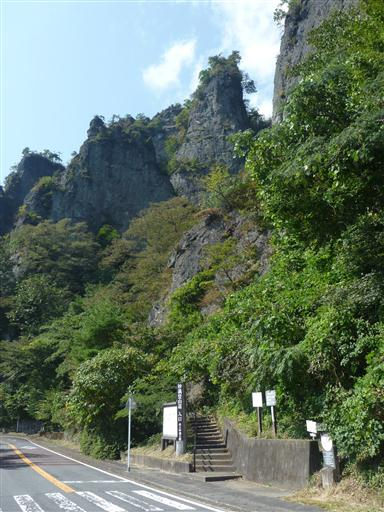
最初の鎖場、かにのこてしらべ。簡単すぎるくらい簡単な鎖場だ。
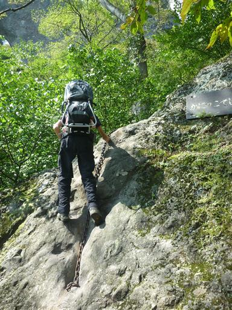
第一石門に到着。石がアーチ状になっている。
縦に非常に長い穴で、全体を写真に収めるのは不可能だ。
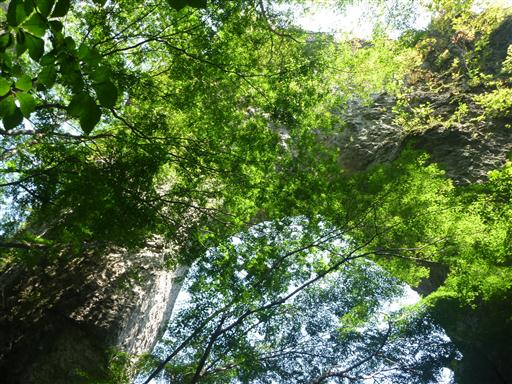
続いて第二石門に到着。こちらの穴は高い位置にある。
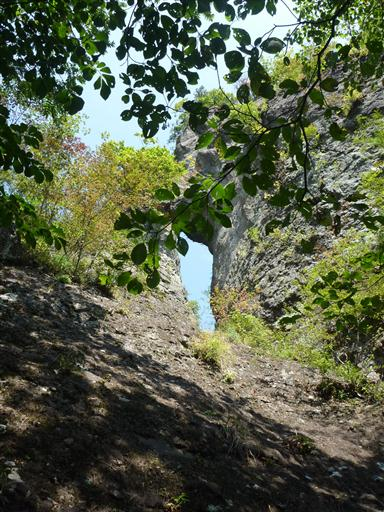
第二石門に至る道は「かにの横ばい」と名付けられた鎖場になっている。
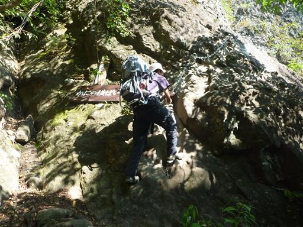
まずは岩場をトラバースしていく。
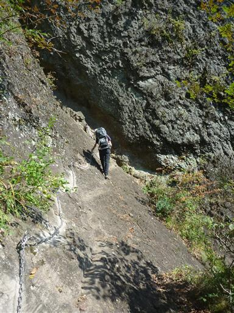
トラバースした後は、穴に向かって鎖場を登っていく。
妙義山といえど、この辺りはファミリー向けの遊歩道のため、比較的簡単に登れる。
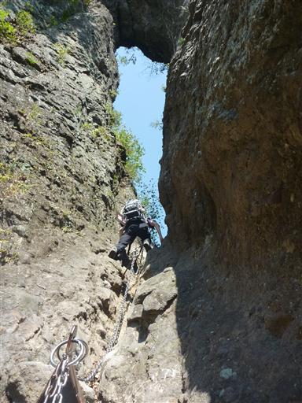
穴を超えると今度は急降下。ザックが大きいので方向転換に苦戦する。
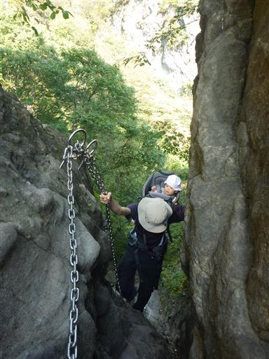
第二石門を見上げる。こちらも縦に長い穴だ。
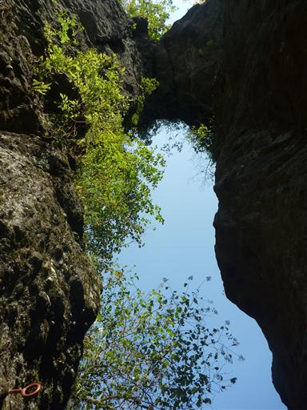
こちらは第三石門。先ほどとは一転して非常に小さな穴だ。
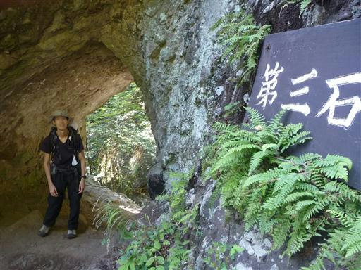
続いて第四石門。この石門が一番有名だ。
有名なだけあって、一番美しい形をしている。
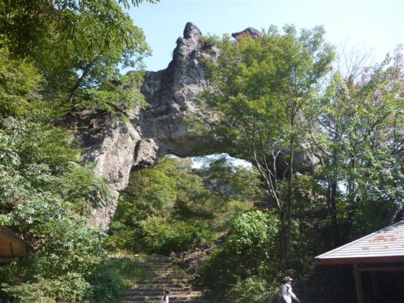
第四石門からは、大砲岩が見える。名前の通り大砲の形だ。
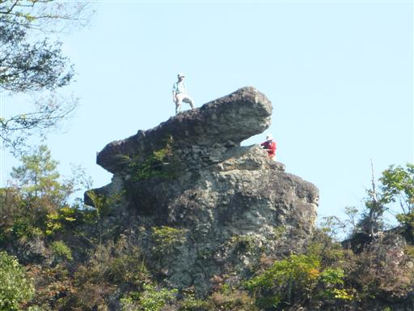
第四石門の前は石門広場と呼ばれる広場がある。ここで休憩して昼食をとることにする。
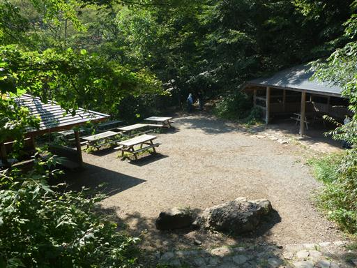
石門広場を後にし、本日のハイライト・大砲岩方面に向かう。
まずは「天狗の評定」という岩場に登ってみる。
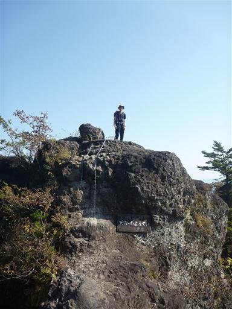
間近に大砲岩が望める。
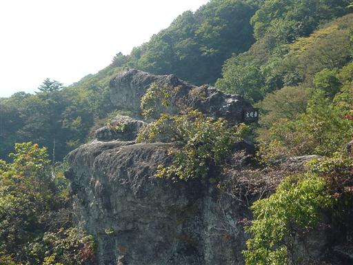
妙義の主峰、白雲山を望む。まさに絶景のポイントだ。
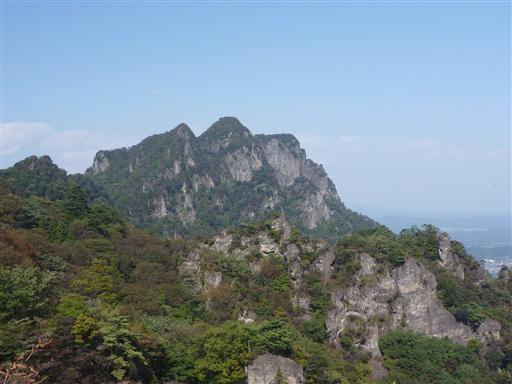
続いて大砲岩に登ってみる。高度感があってなかなかのスリルだ。
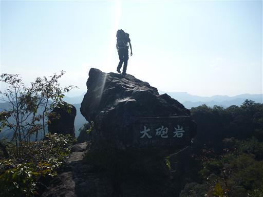
ここから望む景色は、妙義山の中でも特に有名なもの。
地面からにょきにょきと何本も岩が突き立っている。

先ほど登った「天狗の評定」にたくさんのハイカーが立っている。すぐ下は絶壁が続いている。
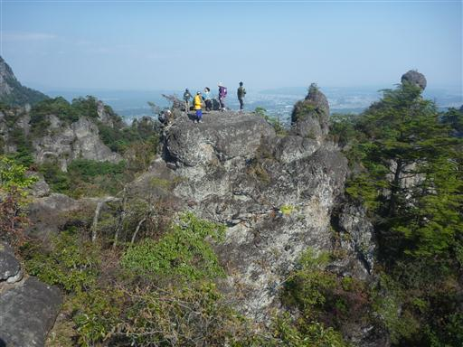
眼下には先ほど訪れた第四石門が望める。
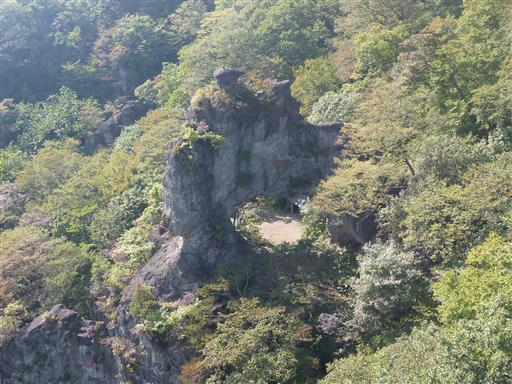
「胎内くぐり」と名付けられた岩場。奥に小さな穴が開いている。
怖くて穴を一周することはできなかった。残念。
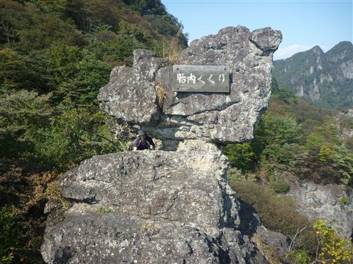
大砲岩を後にし、妙義山中間道を辿って妙義神社まで戻る。
基本的には何の変哲もない登山道なのだが、ところどころで岩のひさしが行く手を阻む。
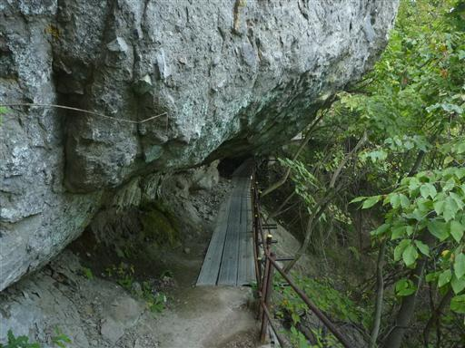
本読みの僧。ここで中間地点らしい。登りが多くて少々疲労気味。
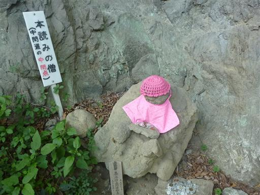
第二見晴に到着。金鶏山が真正面に見える。
子供が泣き出したため、急ぎ足で駐車場に戻る。
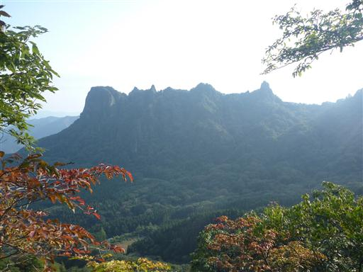
帰りに妙義神社に寄る。
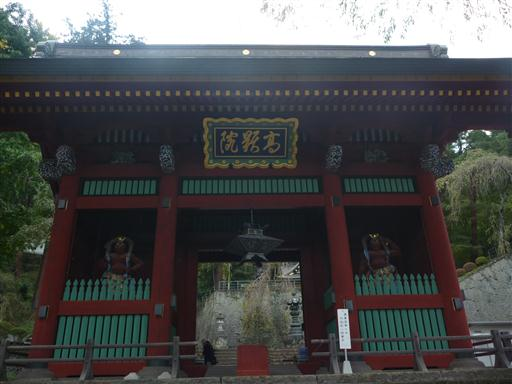
以前来た時と変わりのない風景。4年前の台風で壊れた建物は未だに修復が完了していなかった。
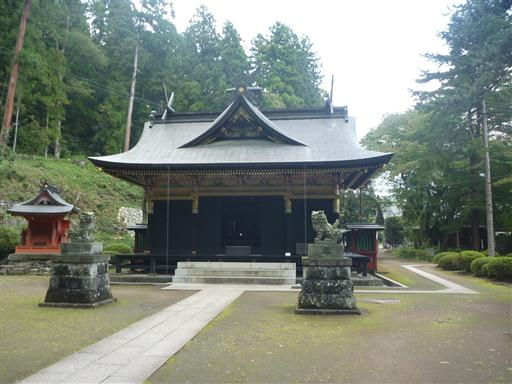
本日の宿泊場所、常盤館に到着。下仁田の町にある小さな旅館だ。
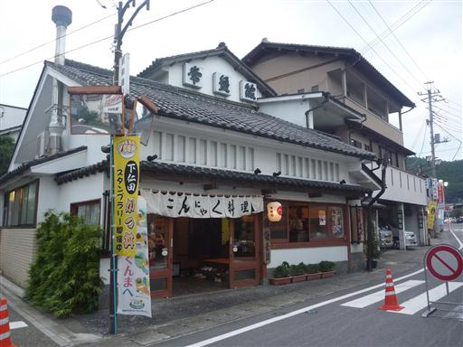
この旅館は大正時代からやっているそうで、建物は変えていないらしい。非常に趣のある建物だ。
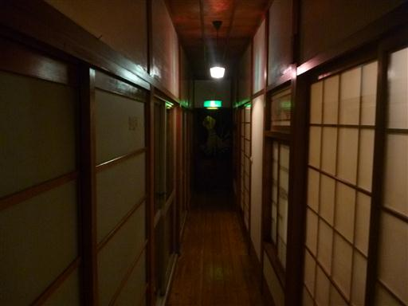
部屋の扉はガラス戸。こんな旅館はなかなかお目にかかれない。
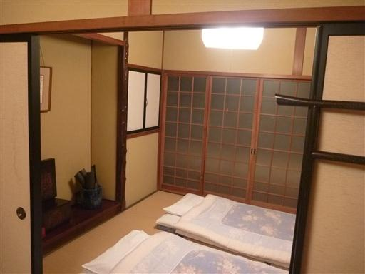
本日は下仁田の秋祭りの日らしいので、少し見学することにする。
山車がたくさんでていて、非常に賑やかだ。
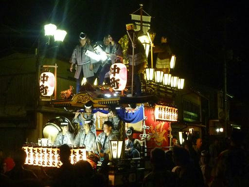